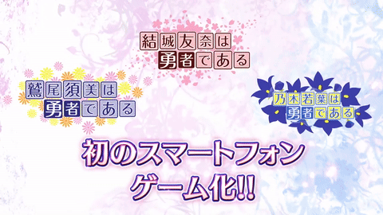
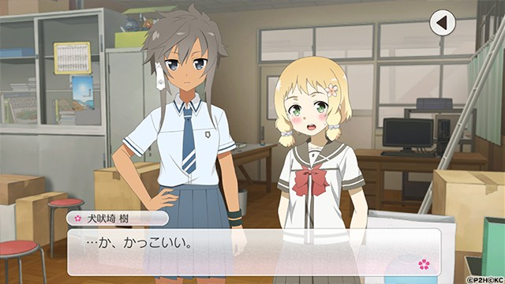
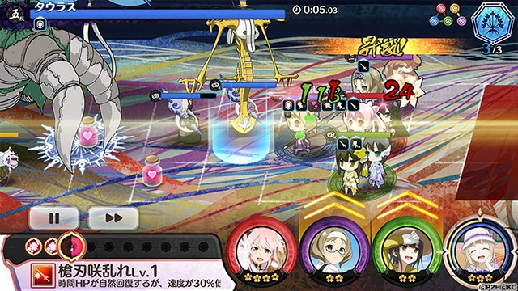

Selected work / 06
Yuki Yuna is a Hero: Hanayui no Kirameki
ADV cutscenes and event direction schedules across three live-ops stints on a mobile title, up to its end of service.
- Role
- Game Planner / Script Planner
- Team
- Live-ops mobile team
- Period
- 2019 — 2023
- Engine
- Unity; proprietary scripting system
- Tools
- In-house script language, Google Sheets, Excel, Word, PowerPoint



Official promotional material illustrates the game; it does not identify individual scene authorship.
Challenge
A live-ops mobile title worked on in three stints between October 2019 and September 2023. Events and their ADV cutscenes had to be scheduled and quality-checked continuously, each stint with a team of three.
What I did
- Developed ADV cutscenes for story events on a live schedule.
- Controlled the quality of the cutscene direction.
- Managed the schedules of events and their ADV direction in Google Sheets.
- Built scenes in Unity with the in-house script language.
- Supported the title in live operation until the end of service.
Result
Ran cutscene development, quality control and event scheduling across three live-ops stints between October 2019 and September 2023.